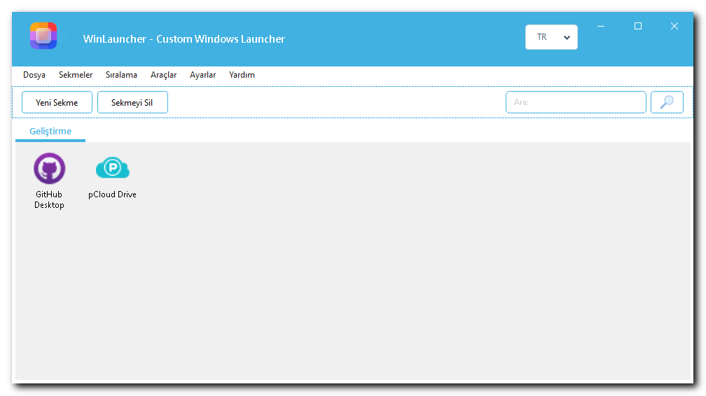
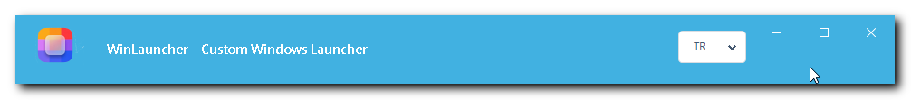
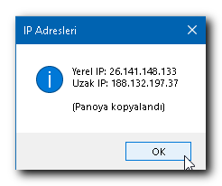
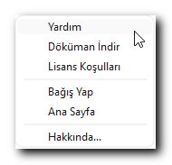
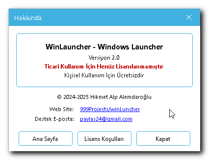
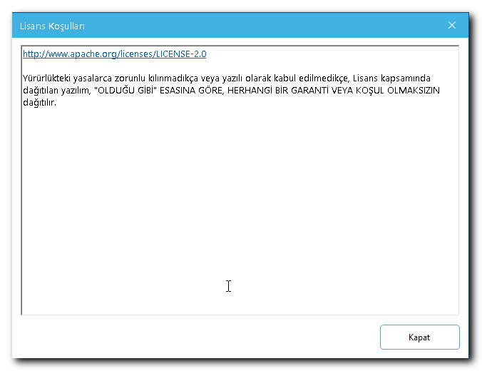
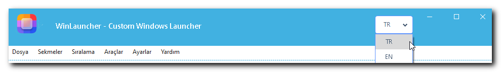

RiaLauncher, Windows için geliştirilmiş modern ve kullanıcı dostu bir uygulama başlatıcıdır. Masaüstünüzü düzenli tutmanıza ve sık kullandığınız programlara, dosyalara ve klasörlere hızlıca erişmenize yardımcı olur.
Özellikler
Özellik
Açıklama
Sekme Yönetimi
Uygulamalarınızı kategorilere ayırın
Tek / Çift Tik
Başlatma modunu seçin
Arama
Öğelerinizde hızla arama yapın
Çok Dilli
Türkçe ve İngilizce arayüz
Sistem Araçları
13 adet yerleşik sistem aracı
Taşınabilir
Kurulum gerektirmez, USB'den çalışır
Manuel Sıralama
Öğe sırasını kendiniz belirleyin
Kopyala / Taşı
Öğeleri sekmeler arasında taşıyın
Kurulum
Sistem Gereksinimleri
Bileşen
Minimum
İşletim Sistemi
Windows 7 / 8 / 10 / 11
.NET Framework
4.7.2 veya üzeri
Disk Alanı
~10 MB
RAM
512 MB
Kurulum Adımları (Portable)
RiaLauncher_v2.0_Portable.zip dosyasını indirin
ZIP dosyasını istediğiniz bir klasöre çıkarın
RiaLauncher.exe dosyasını çalıştırın
Kurulum gerekmez. Program ilk çalışmada tüm gerekli dosyaları otomatik oluşturur.
İlk Çalıştırmada Oluşturulan Dosyalar
RiaLauncher/
RiaLauncher.exe
Data/
RiaLauncher.xml <- Öğe ve sekme verileri
settings.ini <- Uygulama ayarları
assets/
lang.ini <- Dil dosyası
icon/ <- İkon kütüphanesi
documentation/ <- Kılavuzlar
Ana Ekran
Ana ekran, RiaLauncher'ın merkezi yönetim alanıdır.

Ana Ekran
Başlık Çubuğu

Başlık Çubuğu
Başlık çubuğu en üstte yer alır:
Öğe
Açıklama
RiaLauncher Logosu
Sol üstteki uygulama ikonu
Uygulama Başlığı
"RiaLauncher - Custom Windows Launcher"
Dil Menüsü (TR / EN)
Anlık dil değiştirme
Minimize (-)
Pencereyi küçültür
Maximize (kare)
Pencereyi büyütür
Kapat (X)
Programı kapatır
İpucu: Başlık çubuğundan tutarak pencereyi istediğiniz yere sürükleyebilirsiniz.
Yerel ve uzak IP adreslerini gösterir, panoya kopyalar

IP Adresi
Yardım Menüsü
Açmak için: Menü -> Yardım

Yardım Menu
Alt Menü
Açıklama
Yardım
Yardım bilgisi
Dokuman İndir
Aktif dile göre kılavuzu açar
Lisans Koşulları
Lisans detay ekranını açar
Bağış Yap
GitHub Sponsors sayfasına yönlendirir
Ana Sayfa
Projenin GitHub sayfasını açar
Hakkında...
Hakkında ekranını açar
Hakkında Ekranı
Açmak için: Menü -> Yardım -> Hakkında...

Hakkında
Alan
İçerik
Uygulama Adı
RiaLauncher - Windows Launcher
Sürüm
Version 2.0
Lisans Durumu
Ticari Kullanım İçin Henüz Lisanslanmamıştır
Kullanım
Kişisel Kullanım İçin Ücretsizdir
Telif Hakkı
2024-2025 Hikmet Alp Alemdaroğlu
Web Sitesi
Tıklanabilir bağlantı
Destek E-posta
Tıklanabilir e-posta adresi
Butonlar
Buton
İşlev
Ana Sayfa
GitHub proje sayfasını tarayıcıda açar
Lisans Koşulları
Lisans detay ekranını açar
Kapat
Pencereyi kapatır
Lisans Ekranı
Açmak için:
Menü -> Yardım -> Lisans Koşulları
Hakkında ekranı -> Lisans Koşulları butonu

Lisans
Aktif dile göre otomatik yüklenir (TR -> license_tr.txt, EN -> license_en.txt)
Salt okunur - düzenlenemez
Dikey kaydırma ile tüm metin okunabilir
Kapat butonu ile pencere kapatılır
Dil Desteği
Dil Değiştirme

Dil Seçici
Başlık çubuğundaki dil açılır menüsünden (TR / EN) dili seçin
Tüm menüler, butonlar ve mesajlar anında değişir
Seçim settings.ini dosyasına otomatik kaydedilir
Program yeniden başlatıldığında aynı dil aktif kalır
Dil Dosyası Özelleştirme
assets/lang.ini dosyasını bir metin editörüyle düzenleyerek:
Mevcut çevirileri değiştirebilirsiniz
Yeni bir dil ekleyebilirsiniz (örn: [de], [fr])
İpuçları ve Yedekleme
Sekme Organizasyonu Önerileri
Geliştirme - VS Code, Git, Terminal, Postman
Oyunlar - Steam, Epic Games, oyun kısayolları
İş - Office, e-posta, iş uygulamaları
Tasarım - Photoshop, Figma, Illustrator
Sistem - Disk temizleme, antivirus, araçlar
Multimedya - VLC, Spotify, fotoğraf görüntüleyici
İkon İpuçları
.ico dosyaları en iyi kaliteyi verir
128x128 veya 256x256 piksel boyut idealdir
Hazır ikonlar assets/icon/ klasöründe bulunur
Son kullanılan ikon klasörü otomatik hatırlanır
Önemli Dosyaları Yedekleyin
RiaLauncher/
Data/RiaLauncher.xml <- TÜM VERİLERİNİZ
settings.ini <- TÜM AYARLARINIZ
assets/icon/ <- ÖZEL İKONLARINIZ
Bu üç konumu düzenli aralıklarla yedekleyin!
Taşınabilir Kullanım (USB)
Tüm RiaLauncher/ klasörünü USB belleğe kopyalayın
RiaLauncher.exe'yi doğrudan USB'den çalıştırın
Tüm ayarlar ve veriler USB'de saklanır
Farklı bilgisayarlarda aynı deneyim
SSS
S: Program açılmıyor, ne yapmalıyım?
.NET Framework 4.7.2 veya üzerinin kurulu olduğundan emin olun.
S: Öğe ekledim ama ikonlar görünmüyor?
assets/icon/ klasörünün var olduğunu kontrol edin. Öğeye sağ tıklayıp İkonunu Değiştir ile manuel ikon atayabilirsiniz.
S: XML yükleme hatası alıyorum?
Data/RiaLauncher.xml dosyasını silin; program bir sonraki açılışta yeni bir tane oluşturur. NOT: Mevcut verileriniz kaybolur, önce yedekleyin.
S: Dil değiştirdim ama bazı öğeler eski dilde?
Programı kapatıp yeniden açın.
S: Yanlışlıkla öğe sildim, geri alabilir miyim?
Hayır. Bu yüzden RiaLauncher.xml dosyasını düzenli yedekleyin.
S: Aynı uygulamayı birden fazla sekmeye ekleyebilir miyim?
Evet. Öğeye sağ tıklayın -> Kopyala/Taşı -> Kopyala.
S: Ayarlarım kaydedilmiyor?
Programın bulunduğu klasöre yazma izniniz olduğundan emin olun.
S: Yeni bir dil ekleyebilir miyim?
Evet. assets/lang.ini dosyasına yeni bir [dilkodu] bölümü ekleyin (örn: [de]).